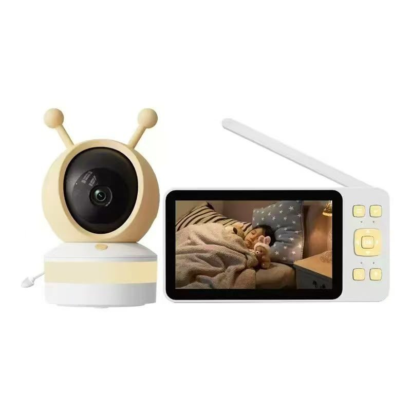

Видеоняни и безопасность
Умная видео-няня 2 в 1 (экран 5.5", Tuya)
7790 сом
Умная видео-няня с экраном 5.5" IPS и подключением к телефону через приложение Tuya.
- Экран 5.5" IPS — смотреть можно без телефона
- Приложение Tuya, Wi-Fi 2.4 GHz, удалённый доступ из любой точки мира
- Изображение 2.5K / 4MP
- Цветное ночное видение и RGB-подсветка
- Двусторонняя связь, датчик движения
- Контроль температуры и влажности
- Колыбельные, будильник, запись на флешку
- Дальность сигнала до 300 м
Наличие подтвердит менеджер